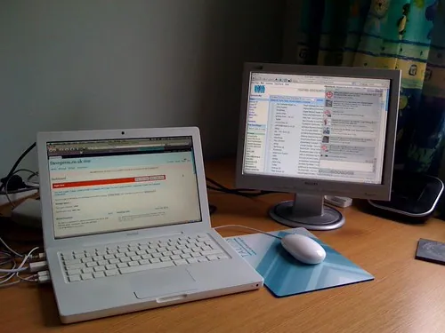

Email Without Stress
Email need not be a source of worry. With a tidy inbox and an eye for the tell-tale signs of a fake message, it becomes what it should be: a simple, pleasant way to keep in touch.

The Steady Mouse is an independent educational website and is not affiliated with, endorsed by, or sponsored by any company mentioned.
A calmer inbox
An overflowing inbox is stressful, but a few habits keep it in hand. Think of it like the post on your hall table: deal with each piece once, then file it or bin it rather than letting it pile up.
- Open each new message and decide one thing: reply, keep, or delete.
- Reply briefly if a reply is needed.
- Keep what matters by moving it to a folder (Outlook) or label (Gmail) such as “Family” or “Bills.”
- Delete the rest — you will not run out of room, and clearing clutter feels good.
Tip: Handling each message once, rather than leaving it to “deal with later,” is the single habit that keeps an inbox from overwhelming you.
Folders and labels
A folder (Outlook) or label (Gmail) is simply a named place for related mail. Setting up two or three is enough to bring order.
- In Outlook, right-click Folders and choose Create new folder; in Gmail, click Create new label in the left list.
- Name it clearly — “Doctor,” “Family,” “Receipts.”
- Drag a message onto the name, or use Move to, to file it.
- Click the folder or label any time to see everything you filed there.
Why phishing fools sensible people
It is tempting to think that only careless people fall for fake emails, but that is simply not so — phishing is designed by professionals to catch careful people on a busy day. Understanding how it works is the best defense, far better than any software.
A phishing message works by borrowing something you trust — your bank's logo, a delivery company's name, the look of a familiar website — and pairing it with a feeling: worry that your account is at risk, excitement about a parcel, or the small pressure of a deadline. That feeling is the trap. It nudges you to act quickly, before the thinking part of your mind catches up. The whole trick depends on speed, which is exactly why slowing down defeats it.
So the habit to build is not fear but a brief pause. When any message asks you to click, sign in, confirm, or pay, take a breath and ask three quiet questions: Was I expecting this? Does it want me to hurry? Is it asking for something secret? If any answer gives you pause, do not use the message at all. Instead, reach the company the way you always do — by typing its address yourself or calling the number on your card. A real company will never mind you taking that care, and a fake one cannot survive it.
Spotting a phishing message
Phishing is a fake email that pretends to be from a real company — your bank, a delivery service, a shop — to trick you into giving away a password or payment. They can look convincing, but they share tell-tale signs.
| Warning sign | What it looks like | What to do |
|---|---|---|
| Urgency or threat | “Your account will be closed today!” | Slow down; real companies do not rush you like this |
| Odd sender address | A jumble of letters, not the real company | Check the address, not just the name shown |
| A link to “verify” | A button asking you to sign in | Don't click; go to the company by typing its address yourself |
| Asks for secrets | Requests a password or card number | Delete it; no honest company asks this by email |
Safety first: If a message about your bank or an account worries you, do not use any link or number inside it. Contact the company directly using a number from your card or a web address you type yourself.
Attachments from strangers
An attachment is a file riding along with an email. From people you know, attachments are fine. From a sender you do not recognize, do not open them — a harmful program can hide inside. When in doubt, delete the message; a genuine sender will understand and try again.
Unsubscribing safely
Legitimate newsletters and shops include an unsubscribe link at the very bottom, and using it is a safe way to stop wanted-turned-unwanted mail.
- Open the newsletter and scroll to the very bottom.
- Click the small Unsubscribe link and confirm if asked.
- For genuine companies, that is all it takes.
Tip: Only use unsubscribe links in mail from companies you actually recognize. For out-and-out spam from strangers, do not click anything — just mark it as spam, which also teaches your email to filter similar messages.
Writing a message people enjoy reading
A few gentle habits make your email clear and welcome, without any fuss.
- Always use the subject line. A few words — “Lunch on Sunday?” — tell the reader what the message is about and help them find it later.
- Greet and sign off as you would in a note: “Hello Tom” at the top, “Warmly, Mum” at the bottom.
- Keep paragraphs short with a blank line between thoughts; a wall of text is hard to read on screen.
- Read it once before sending — there is no taking an email back once it has gone, so a quick glance is always worth the few seconds it takes.
Tip: Writing entirely in capital letters reads as shouting online. Ordinary sentence case is friendlier and easier on the eye.
The same email on every device
Your email is one mailbox, and you can open it on your computer, your phone, and your tablet at once. A message you read in one place shows as read in the others, and anything you send appears in your Sent folder everywhere. There is nothing to copy across — signing in with the same address and password is all it takes.
- On a phone or tablet, open its Mail app or the Gmail/Outlook app.
- Choose Add account and pick your provider.
- Sign in with the same email address and password you use on the computer.
- Your messages appear within a moment, perfectly in step with your computer.
The spam folder
Your email quietly sweeps junk into a Spam or Junk folder. Glance in once a week in case a real message landed there by mistake; if it did, open it and click Not spam. Leave the rest to be deleted automatically.
Tip: If you ever want a fresh start, you can open a second free email address for newsletters and shopping, keeping your main address just for family, your bank, and your doctor. It is a simple way to keep the important mail from being buried under the everyday clutter, and it costs nothing to set up.
Looking after your email address
Your email address is more valuable than it looks, because it is the master key to almost everything else you do online. When you forget a password for a shop or a service, the reset is sent to your email; so whoever controls your email could, in theory, control the rest. That is not cause for alarm, but it is good reason to guard it well.
Two habits do most of the protecting. First, give your email the strongest, most unique password you have, different from every other, and turn on two-step verification so a code to your phone is needed as well. Second, be a little sparing about where you hand the address out; a shop needs it to send a receipt, but a passing website filling your inbox with clutter does not deserve it. Keeping a tidy, well-guarded mailbox is one of the quiet foundations of a calm life online.
It is also worth keeping your own copy of the emails that truly matter — a letter from the doctor, a confirmation you may need later. You can print them with the print button, or simply leave them filed in a folder where you will find them. A little organization now saves a great deal of searching later, and it means the message you need is always a click or two away rather than lost somewhere in a crowded inbox. Protecting yourself further is the subject of Scam Awareness.